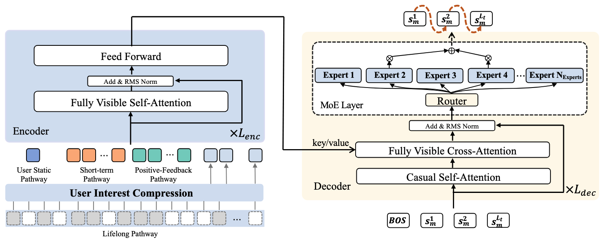
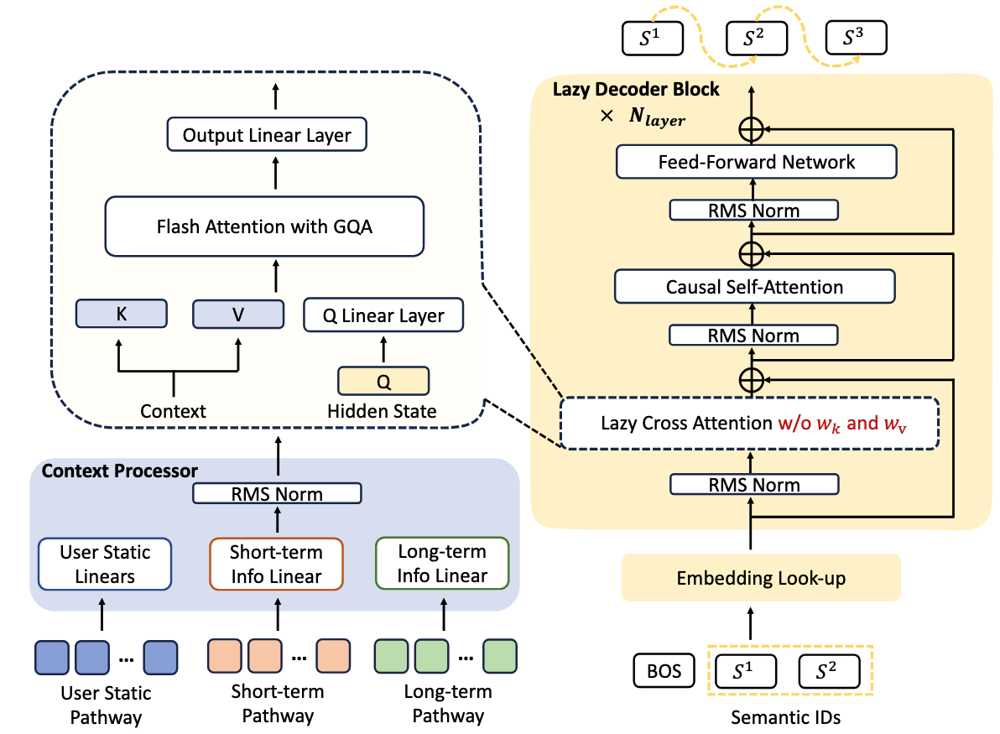

7.1. OneRec的架构演进¶
如前所述，传统多阶段级联架构存在计算碎片化、优化目标冲突、与 AI 前沿技术脱节等结构性缺陷。在推荐场景下，这些问题尤为突出：大量资源消耗在通信和存储而非模型计算，GPU 利用率远低于大语言模型；各阶段目标分散，模型结构差异导致建模不一致；级联架构阻碍了 Scaling Law、强化学习对齐等先进技术的应用。
为解决这些问题，快手团队提出了 OneRec 框架，将推荐系统重新定义为端到端的生成式任务：模型根据用户上下文直接“生成”推荐序列，而非从候选集中“挑选”物品。本节将介绍 OneRec-V1 的技术体系、其部署中暴露的关键瓶颈，以及 OneRec-V2 如何突破这些瓶颈。
7.1.1. OneRec-V1：开创性探索¶
7.1.1.1. 语义 ID 设计¶
生成式推荐面临的首要挑战是：如何让模型“说出”一个物品？在传统推荐系统中，物品通过原子 ID（如视频 ID）来标识，但快手平台拥有数十亿量级的物品，直接生成原子 ID 会导致 Softmax 层的计算量爆炸。OneRec-V1 采用语义 ID（Semantic ID）来解决这一难题 (Deng et al., 2025)。
语义 ID 的核心思想是将物品映射到一个有限且可控的词表空间。具体而言，每个视频被编码为 \(L_t = 3\) 个语义 Token，词表大小为 \(N_t\)，这使得总的编码空间为 \(N_t^{L_t}\)。这个编码空间远大于实际物品数量，确保了所有物品都能被覆盖，同时较大的词表引入了更多参数，有助于提升模型性能。
语义 ID 的生成过程分为两个阶段：
阶段一：协同感知的多模态表示学习。每个视频包含丰富的多模态信息，包括标题、标签、语音转文字（ASR）、图像转文字（OCR）、封面图和采样帧。这些信息通过视觉语言模型（如 miniCPM-V-8B）处理后，生成 1280 个 Token 向量。为了实现高效处理，采用 QFormer 模块将这些向量压缩为 4 个可学习的查询向量。
然而，仅依赖内容特征生成的语义 ID 无法捕捉协同过滤信号。为此，OneRec-V1 引入了物品对对比学习：从用户行为中提取高协同相似度的物品对（如同一用户正向点击的物品），通过对比损失拉近这些物品对的表示，使语义 ID 能够同时编码内容语义和行为模式：
同时，为防止表示退化，还加入了标题生成的辅助任务，确保表示保留内容理解能力。
阶段二：RQ-Kmeans 层次化量化。获得协同感知的多模态表示后，采用残差量化 K-means（RQ-Kmeans）将连续表示离散化为语义 ID。不同于端到端训练的 RQ-VAE，RQ-Kmeans 直接在残差上应用 K-means 聚类构建码本：
经过 3 层量化，每个视频 \(m\) 获得由粗到细的语义标识符序列 \(\{s_m^1, s_m^2, s_m^3\}\)，这将成为生成式推荐模型的输出目标。
7.1.1.2. 模型架构设计¶
OneRec-V1 采用经典的 Encoder-Decoder 架构实现端到端生成。编码器负责处理和编码用户的多尺度特征，解码器则基于编码器输出的上下文表示，以自回归方式生成目标物品的语义 ID 序列。
{kind=link}

图7.1.1 Onerec-V1模型结构图¶
编码器设计
编码器的设计体现了对用户兴趣多时间尺度特性的深刻理解：
用户静态特征通路（User Static Pathway）：处理用户 ID、年龄、性别等基础画像信息，经过两层密集层变换后得到表示 \(\mathbf{h}_u \in \mathbb{R}^{1 \times d_{model}}\)。
短期行为通路（Short-term Pathway）：处理用户最近 20 次交互（\(L_s=20\)）。每个交互包含丰富的上下文信息：物品 ID（可以是原子 ID
vid或语义 IDsid）、作者 ID、标签、时间戳、播放时长、物品时长，以及各类交互标签（点赞、关注、转发、不喜欢等）。这些特征拼接后经过非线性变换得到 \(\mathbf{h}_s \in \mathbb{R}^{L_s \times d_{model}}\)。正反馈行为通路（Positive-feedback Pathway）：处理用户 256 次高参与度交互（\(L_p=256\)），特征构成与短期通路类似，得到 \(\mathbf{h}_p \in \mathbb{R}^{L_p \times d_{model}}\)。
超长期历史通路（Lifelong Pathway）：这是 OneRec-V1 的一大创新。用户可能有多达 10 万条历史交互记录，直接处理会导致计算量爆炸。OneRec-V1 采用分层压缩策略：首先通过分层 K-means 聚类对历史序列进行压缩（动态调整聚类数为 \(\lfloor\sqrt[3]{|D|}\rfloor\)），选择最接近中心的代表物品；然后使用 QFormer 模块，通过 128 个可学习查询向量对压缩后的 2000 长度序列进行交叉注意力处理，最终得到紧凑表示 \(\mathbf{h}_l \in \mathbb{R}^{128 \times d_{model}}\)。
四个通路的输出被拼接成完整的上下文序列，通过 \(L_{enc}\) 层 Transformer 编码器处理：
最终编码器输出 \(\mathbf{z}_{enc} \in \mathbb{R}^{(1+L_s+L_p+128) \times d_{model}}\) 提供全面的用户上下文表示。
解码器设计
解码器负责基于上下文表示生成目标物品。对于每个目标物品
\(m\)，解码器输入由起始 Token [BOS] 和该物品的语义 ID
序列组成。每层解码器包含三个关键组件：
其中因果自注意力捕获已生成 Token 间的依赖，交叉注意力让解码器关注编码器的上下文，混合专家前馈网络（MoE FFN）采用 top-k 路由策略，在增强模型容量的同时保持计算效率。模型通过最小化下一个 Token 预测的交叉熵损失进行训练：
7.1.1.3. 奖励系统设计¶
预训练模型仅通过 \(\mathcal{L}_{NTP}\) 拟合历史曝光数据的分布，而这些曝光数据来自传统推荐系统。这导致模型本质上在“模仿”过去系统的行为，性能上限被传统推荐系统所束缚。为了突破这一天花板，OneRec-V1 引入了基于奖励系统的强化学习后训练，包含三个层次的奖励设计：
用户偏好对齐
在推荐系统中，定义“好的推荐”远比判断数学题的对错复杂。传统方法通过人工调整权重将多个目标（点击率 CTR、点赞率 LTR、观看时长 VTR 等）的预测值融合成一个分数，但这种方式既缺乏精准性也缺乏个性化，且容易导致目标间的优化冲突。
OneRec-V1 提出使用神经网络学习个性化的 P-Score (Preference Score)。模型基于 SIM（Search-based Interest Model）架构，为每个目标构建独立的塔，各塔使用对应目标的标签计算二元交叉熵损失作为辅助任务。各塔的隐状态连同用户和物品表示被输入最终 MLP 层，输出 P-Score：
通过调整权重 \(w^{xtr}\)，可以让 P-Score 偏向各个目标，最终在所有目标上都实现 AUC 提升。这种方法能够接收具体用户信息，为该用户动态调整偏好分数，而不会影响其他用户体验。
生成格式规范化
生成式推荐中，语义 ID 序列的编码空间 \(N_t^{L_t}\) 远大于实际物品数量。这确保了物品覆盖且引入更多参数提升性能，但也可能导致推理时生成无法映射到实际物品 ID 的非法序列。引入强化学习后，这个问题会急剧恶化，这源于挤压效应（Squeezing Effect）：
预训练模型已学会生成大部分合法 Token。当对负优势物品应用强化学习时，模型会将概率质量压缩到当前认为的最优输出 \(o^*\)，导致部分合法 Token 的概率被挤压到与非法 Token 相近的水平，模型难以区分。
为解决此问题，OneRec-V1 引入格式奖励：从生成样本中随机选择部分进行合法性强化学习，对合法样本设置优势为 1，对非法样本直接丢弃以避免挤压效应。
工业场景对齐
传统推荐系统通过在级联架构的某一阶段应用算法处理生态健康、冷启动、商业化等问题，但由于阶段间不一致，容易陷入“打补丁”的恶性循环。OneRec 的端到端特性使得只需将优化目标融入奖励系统，通过强化学习进行针对性优化。
以快手平台的病毒式内容农场为例：当病毒内容占比超过最优比例 \(f\) 时，对其 P-Score 奖励进行降权：
实验表明，SIR 有效降低了病毒内容曝光 9.59%，同时核心指标保持稳定。
7.1.1.4. ECPO 算法¶
OneRec-V1 使用 ECPO（Early Clipped GRPO）算法进行偏好对齐。对于用户 \(u\)，使用旧策略模型生成 \(G\) 个物品，每个物品通过 P-Score 模型获得奖励 \(r_i\)。优化目标为：
其中优势函数 \(A_i = (r_i - \text{mean}(\{r_1,...,r_G\})) / \text{std}(\{r_1,...,r_G\})\)，旧策略经过早期裁剪修正：
ECPO 相比原始 GRPO 的关键改进在于：对负优势样本的策略比率进行预先裁剪。在 GRPO 中，负优势样本的策略比率可以任意大，容易导致梯度爆炸；ECPO 通过引入 \(\delta\) 参数限制负优势样本的最大比率，在保持训练稳定性的同时允许负优势发挥作用。
OneRec-V1 在快手的线上部署中验证了端到端生成式推荐的可行性，各项核心指标均取得显著提升。然而，在进一步扩展模型规模时，发现了两个关键瓶颈：一是 Encoder-Decoder 架构存在严重的计算资源分配失衡，绝大部分计算被消耗在上下文编码上，而真正产生梯度的目标 Token 解码占比极低；二是基于奖励模型的强化学习面临采样效率低和 reward hacking 的风险。随着 OneRec 大规模部署后真实用户反馈变得可观测，这些瓶颈催生了 OneRec-V2 的诞生。
7.1.2. OneRec-V2：效率与性能突破¶
OneRec-V2 从架构和算法两个维度进行了系统性优化：架构上提出 Lazy Decoder-Only 架构解决计算效率问题，算法上引入基于真实用户反馈的强化学习突破奖励模型的局限 (Zhou et al., 2025)。
7.1.2.1. Lazy Decoder-Only 架构¶
Lazy Decoder-Only 架构的设计哲学是：将计算资源集中到真正对损失贡献梯度的目标物品 Token 上。这一架构包含两个核心组件：
{kind=link}

图7.1.2 Onerec Lazy Decoder-Only模型结构图¶
Context Processor 设计
Context Processor 将异构的用户特征统一转换为适合解码器消费的键值对。这是 Lazy Decoder-Only 架构效率提升的关键所在。
具体而言，所有用户特征首先被拼接成一个统一的上下文序列，序列中的每个 Token 被映射到维度：
其中 \(d_{head}\) 是注意力头维度，\(G_{kv}\) 是键值头分组数，\(S_{kv}\) 是键值分离系数（\(S_{kv}=1\) 表示键和值共享表示，\(S_{kv}=2\) 表示分离），\(L_{kv}\) 是键值层数。
Context Processor 将上下文表示沿特征维度切分成 \(L_{kv}\) 组，每组经过 RMSNorm 归一化后生成对应的键值对：
这种设计的巧妙之处在于：这些键值对对于同一上下文在整个前向传播过程中保持不变，因此可以被多个解码器层共享，而无需在每一层重新计算。实验表明，即使采用极致的共享策略（\(L_{kv}=1, S_{kv}=1\)），模型性能也不会受到明显影响。
Lazy Decoder Block 设计
与传统 Decoder-Only 架构将所有输入拼接成一个长序列进行自注意力处理不同，Lazy Decoder-Only 架构不将上下文信息作为序列的一部分，而是将其视为静态的条件信息，仅通过交叉注意力访问。这里“Lazy（惰性）”的含义是：只在目标 Token 位置计算损失，而不对整个序列的每个位置都计算下一 Token 预测损失。
在训练时，目标物品的前两个语义 ID 加上一个 [BOS] Token
组成输入序列（仅 3 个 Token！）：
这个紧凑的序列通过 \(N_{layer}\) 层 Lazy Decoder Block 处理，每层包含三个步骤：
Lazy Cross-Attention：让解码器隐藏状态关注 Context Processor 提供的键值对。“惰性”体现在两个方面：(1) 无键值投影，直接使用预先计算好的键值对，当前层使用第 \(l_{kv} = \lfloor l \cdot L_{kv} / N_{layer} \rfloor\) 组键值对；(2) 分组查询注意力（GQA），多个查询头共享同一组键值头，极大降低内存占用。
Causal Self-Attention：在目标物品的语义 ID Token 之间进行自回归建模。
Feed-Forward Network：对注意力输出进行非线性变换，在更深层可用 MoE 替代。
效率提升量化
通过这种设计，Lazy Decoder-Only 架构实现了接近 100% 的计算资源集中在目标 Token 上：
架构 |
参数量 |
计算量 (GFLOPs) |
收敛损失 |
|---|---|---|---|
Encoder-Decoder (1:1) |
1B |
296.36 |
3.28 |
Lazy Decoder-Only |
1B |
18.89 |
3.27 |
换言之，Lazy Decoder-Only 架构在保持相近的模型性能的前提下，将计算开销降低了 94%，训练资源节约了 90%。
7.1.2.2. Scaling Law 验证¶
Lazy Decoder-Only 架构展现出优秀的可扩展性。OneRec-V2 成功将模型规模从 0.1B 扩展到 8B 参数，并观察到清晰的 Scaling Law：模型损失 \(L\) 随参数量 \(N\) 的增长呈现幂律衰减：
拟合参数为 \(E=3.13, A=3660, \alpha=0.489\)。这意味着随着模型规模增大，推荐效果呈现可预测的持续改进。
模型规模 |
参数量 |
收敛损失 |
|---|---|---|
Dense |
0.1B |
3.57 |
Dense |
0.5B |
3.33 |
Dense |
1B |
3.27 |
Dense |
2B |
3.23 |
Dense |
4B |
3.20 |
Dense |
8B |
3.19 |
MoE |
4B (0.5B 激活) |
3.22 |
通过引入 MoE，一个总参数 4B 但每次仅激活 0.5B 的稀疏模型，收敛损失为 3.22，优于 2B 密集模型（损失 3.23），而计算开销与 0.5B 密集模型相当。这为在计算预算受限的情况下提升模型性能提供了有效途径。
7.1.2.3. 用户反馈强化学习¶
OneRec-V2 利用大规模部署后获得的真实用户反馈信号进行强化学习，从根本上解决奖励模型的局限性。在短视频推荐场景中，每个视频的播放时长是最密集的反馈信号，且与最重要的在线指标（如 App Stay Time 和 7 日留存 LT7）高度相关。
然而，原始播放时长存在固有偏差：长视频天然倾向于累积更长的播放时长，无论用户兴趣如何。为解决这一偏差，OneRec-V2 提出时长感知奖励塑形（Duration-Aware Reward Shaping）：
对数分桶：由于视频时长呈长尾分布，采用对数策略将历史视频划分到不同桶中：
(7.1.21)¶\[\mathcal{F}(d) = \lfloor \log_{\beta}(d + \epsilon) \rfloor\]分桶内百分位计算：对于目标视频 \(i\)，计算其播放时长 \(p_i\) 在对应时长桶内用户历史分布中的百分位排名：
(7.1.22)¶\[q_i = \frac{|\{p_j \in P_{u,b} | p_j \le p_i\}|}{|P_{u,b}|}\]优势值分配：选择排名前 25% 的视频作为正样本（\(A_i = +1\)），明确负反馈（如“不喜欢”）的视频作为负样本（\(A_i = -1\)），其他样本过滤（\(A_i = 0\)）：
这种策略有效过滤出高质量正样本，同时纳入直接负反馈信号，生成更准确的用户偏好信号。
7.1.2.4. GBPO 算法¶
在使用真实用户反馈进行强化学习时，OneRec-V2 发现传统的裁剪方法（如 PPO、GRPO、ECPO）无法完全解决梯度不稳定问题。问题的根源在于：对于策略比率为 1 的样本（如来自传统推荐管线的曝光样本），传统方法认为这些样本是稳定的而不进行裁剪，但实际上负样本仍可能导致梯度爆炸。
从梯度角度分析，对于策略比率为 1 的 Token \(i\)：
这表明当前 Token 概率 \(\pi_\theta\) 越小，梯度越大。对于正样本，较小概率意味着更大的提升空间，较大梯度是合理的；但对于负样本，较小概率意味着抑制空间有限，过大梯度容易导致过拟合甚至崩溃。
观察到 BCE 损失对负样本有更稳定的梯度特性后，OneRec-V2 提出 GBPO（Gradient-Bounded Policy Optimization），用 BCE 损失的稳定梯度来界定 RL 梯度：
GBPO 相比传统裁剪方法有两个优势：(1) 完整样本利用，保留所有样本的梯度，鼓励模型进行更多样化的探索；(2) 有界梯度稳定化，用 BCE 损失的梯度界定 RL 梯度，增强训练稳定性。